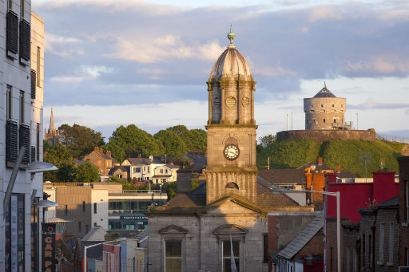

The Tholsel
The Tholsel which stands at the junction of West Street and Shop Street is a fine building of local limestone, surmounted by a tower, which houses a large four-faced clock.
Erected in 1770 on the site of the old medieval wooden Tholsel, it was for almost 130 years the centre of municipal authority, until the Corporation moved its offices and Council Chambers to the then newly-erected Courthouse in Fair Street in 1889. After that the Hibernian Bank, later to become Bank of Ireland, operated from the premises and the Tholsel is now the Drogheda Tourist Office and a must see for all visitors.
The Tholsel has been for countless generations a local trysting place, and before the advent of radio and television, with their constant time checks, Drogheda's clocks and watches were set by its dependable old time-piece.
It is now the Drogheda Tourist Office and a must see for all visitors.